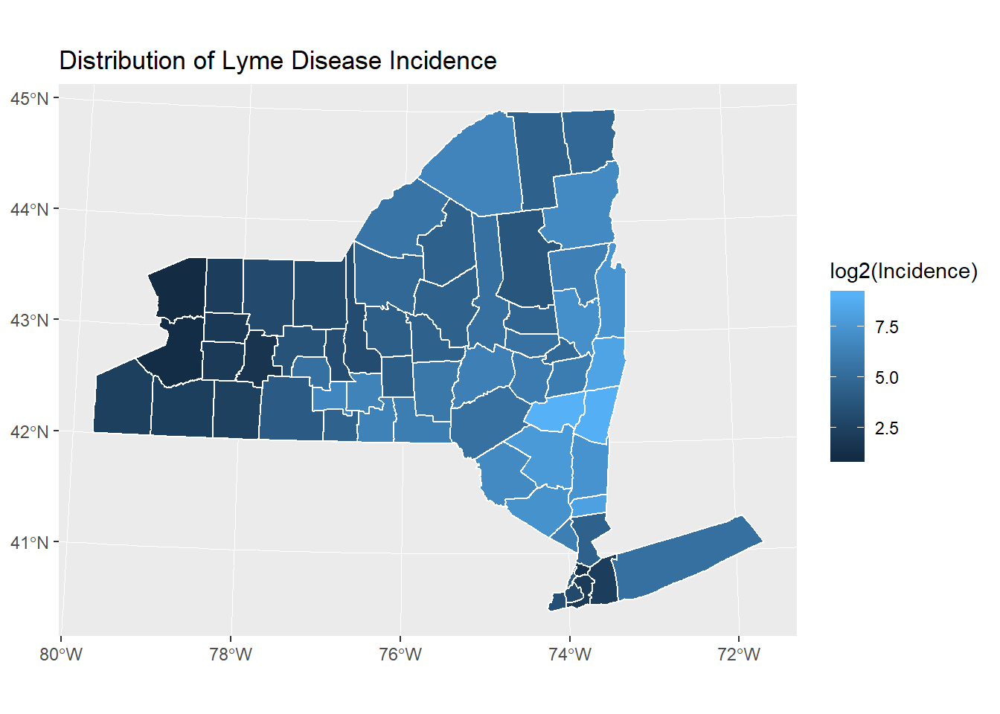

Connection between Deer Tick and Lyme Disease
Take counties in New York State for example
Yichi Zhang
6/11/2018
Instruction and background:
About Lyme disease and Ticks
Lyme disease is the most prevalent tick-borne disease in New York State and is prevalent in the Northeast & Great Lakes region. 
Lyme disease is an infection caused by the bacteria Borrelia burgdorferi and is spread to humans through the bite of infected blacklegged ticks (or deer ticks). According to the Centers for Disease Control and Prevention (CDC), the tick must be attached to the skin for 36 to 48 hours or more for bacterium transmission to occur. Typical symptoms include fever, headache, fatigue, and a characteristic skin rash called erythema migrans. If left untreated, infection can spread to joints, the heart, and the nervous system. Lyme disease is diagnosed based on symptoms, physical findings (e.g., rash), and the possibility of exposure to infected ticks.

Ticks can infect humans and pets with bacteria, viruses, and parasites that can cause serious illness. Infected deer ticks can be found throughout New York State,but not all deer ticks are infected with the bacteria. Lyme disease can affect people of any age. A vaccine for Lyme disease is not currently available.Steps to prevent Lyme disease include using insect repellent, removing ticks promptly, applying pesticides, and reducing tick habitat. The ticks that transmit Lyme disease can occasionally transmit other tickborne diseases as well.
Click here to get more information about Lyme Disease Incidence Rate in Central New York.
Data and Preparation:
Raw data include (1) Deer Tick Surveillance: Adults (Oct to Dec) excluding Powassan virus: Beginning 2008. data source1 and (2) Community Health Lyme Disease Incidence Rate per 100000 by County. data source2 All these data are download from The Official Website of New York State.Also,(3)basement map of New York State which contains population data of each county. data source3
To Analysis the connection between deer tick and Lyme Disease, there are three main steps in my project:
- visualizing the Lyme Disease Incidence of 62 counties in New York State.
- visualizing the Tick population Density and Percentage of adult deer ticks that tested positive for Borrelia burgdorferi.
- visualizing the connection between Lyme Disease Incidence and Ticks.
Note
Data(1) only provide adult tick infections at a precise location and at one point at time. Both measures, tick population density and percentage, of ticks infected with the specified bacteria or parasite can vary greatly within a very small area and within a county. This maybe causes some inaccuracies.
Methods:
Load packages:
library(sf)
library(tidyverse)
library(ggplot2)Load raw data:
#load data
map <- sf::st_read('data/tupian/Counties.shp')
map_sf <- st_as_sf(map)
deertick <- read.csv('data/Deer_Tick.csv')
disease <- read.csv('data/Lyme_Disease.csv')First step
Conbine Lyme Disease Incidence with Base map data. The columes I need are County.Name and Percent.Rate(Lyme Disease Incidence per 100,000). Then I change the name of Name colume, to make it coincidence to join:
#combine data
disease_select <- select(disease,County.Name,Percent.Rate)
names(disease_select)[1] <- "NAME"
names(disease_select)[2] <- "Incidence"
map_disease <- full_join(map_sf,disease_select,by="NAME")Visualization of Lyme disease Incidence of every counties in New York State:
#visualization of Incidence of Lyme disease
ggplot()+
geom_sf(aes(fill=log2(Incidence)),data=map_disease,colour = "white")+
ggtitle('Distribution of Lyme Disease Incidence')